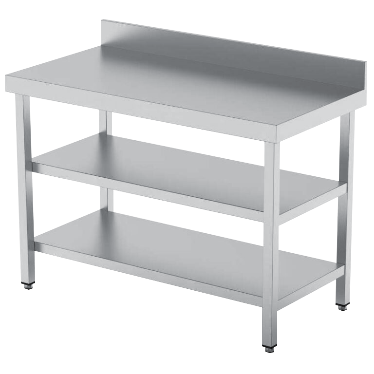

Logotipo(favicon) original:

Esta pagina web fue publicada el 25/7/26, Por Ignacio Bares, el objetivo de la pagina web aun no esta concluido aparte de de biografia.
Si quierer ver como se vio originalmente esta web, puedes probarlo. Y tambien mas opciones.